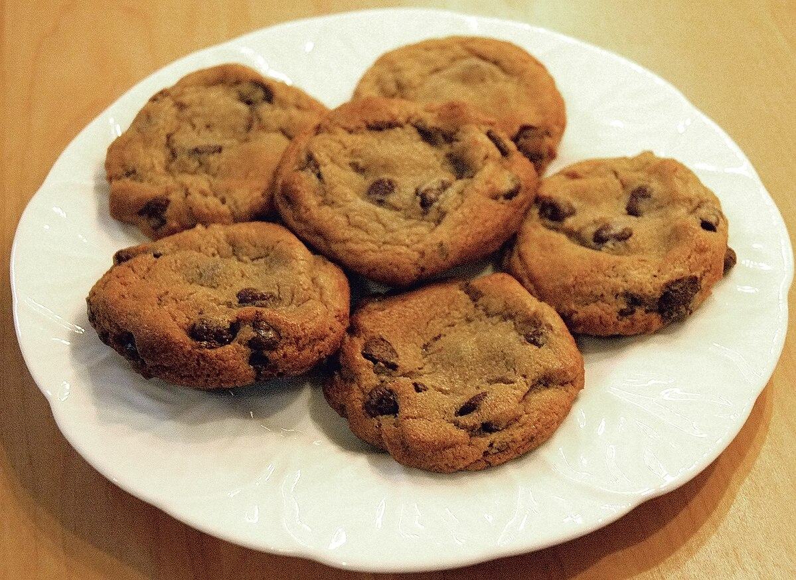

Home
Chocolate Chip Cookies

"A plate of chocolate chip cookies" by Rdsmith4 from own work. CC BY-SA 2.5
Description
A classic. You can never go wrong with cookies!
Ingredients
- 1 cup butter, softened
- 1 cup white sugar
- 1 cup packed brown sugar
- 2 large eggs
- 2 teaspoons vanilla extract
- 1 teaspoon baking soda
- 2 teaspoons hot water
- ½ teaspoon salt
- 3 cups all-purpose flour
- 2 cups semisweet chocolate chips
- 1 cup chopped walnuts
Steps
- Gather your ingredients, making sure your butter is softened, and your eggs are room temperature.
- Preheat the oven to 350 degrees F (175 degrees C). Beat butter, white sugar, and brown sugar in a large bowl with an electric mixer until smooth and creamy.
- Beat in eggs, one at a time, then stir in vanilla.
- Dissolve baking soda in hot water; add to batter along with salt and mix until combined.
- Stir in flour, chocolate chips, and walnuts until a soft dough forms.
- Drop rounded spoonfuls of cookie dough 2 inches apart onto ungreased baking sheets.
- Bake in the preheated oven until edges are lightly browned, about 10 minutes.
- Cool on the baking sheets briefly before removing to a wire rack to cool completely.
- Store in an airtight container or serve immediately and enjoy!
Credits